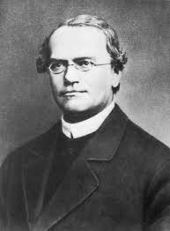
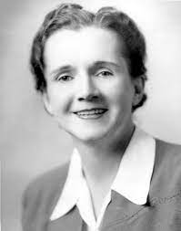
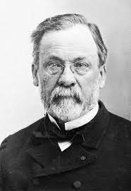

The word biology is derived from the greek words /bios/ meaning /life/ and /logos/ meaning /study/ and is defined as the science of life and living organisms. An organism is a living entity consisting of one cell e.g. bacteria, or several cells e.g. animals, plants and fungi.
Gregor Johann Mendel ( 20 July 1822– 6 January 1884) was a German-Czech biologist, meteorologist, mathematician, Augustinian friar and abbot of St. Thomas' Abbey in Brno , Margraviate of Moravia. Mendel was born in a German-speaking family in the Silesian part of the Austrian Empire (today's Czech Republic) and gained posthumous recognition as the founder of the modern science of genetics. Though farmers had known for millennia that crossbreeding of animals and plants could favor certain desirable traits, Mendel's pea plant experiments conducted between 1856 and 1863 established many of the rules of heredity, now referred to as the laws of Mendelian inheritance.
Rachel Louise Carson (May 27, 1907 – April 14, 1964) was an American marine biologist, writer, and conservationist whose influential book Silent Spring (1962) and other writings are credited with advancing the global environmental movement. Carson began her career as an aquatic biologist in the U.S. Bureau of Fisheries, and became a full-time nature writer in the 1950s. Her widely praised 1951 bestseller The Sea Around Us won her a U.S. National Book Award, recognition as a gifted writer and financial security. Her next book, The Edge of the Sea, and the reissued version of her first book, Under the Sea Wind, were also bestsellers.
Louis Pasteur ;( 27 December 1822 – 28 September 1895) was a French chemist and microbiologist renowned for his discoveries of the principles of vaccination, microbial fermentation, and pasteurization, the last of which was named after him. His research in chemistry led to remarkable breakthroughs in the understanding of the causes and preventions of diseases, which laid down the foundations of hygiene, public health and much of modern medicine. Pasteur's works are credited with saving millions of lives through the developments of vaccines for rabies and anthrax. He is regarded as one of the founders of modern bacteriology and has been honored as the "father of bacteriology" and the "father of microbiology" (together with Robert Koch; the latter epithet also attributed to Antonie van Leeuwenhoek).